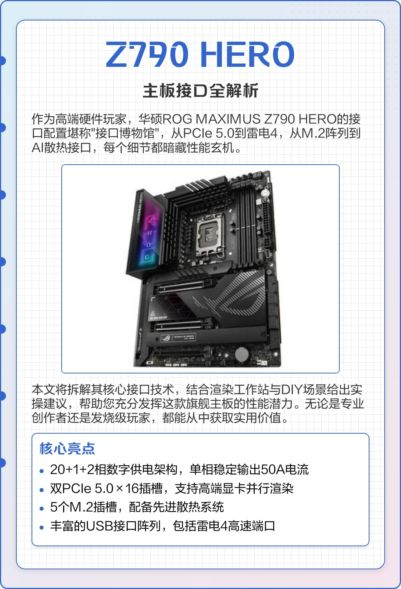

华硕 ROG MAXIMUS Z790 HERO

ROG 玩家国度高端旗舰，Z790 芯片组搭配 20+1 相强悍供电与五 M.2 扩展，10G 网卡、双有线网口与信仰级散热装甲兼备，是 13/14 代酷睿超频与高端整机的门面担当。
客观评测
Z790 HERO 采用 20+1 相 teamed 供电设计，单相电流约 90A，配合大型散热装甲，可稳定承载 i9-13900K/14900K 长时间满载与超频。扩展方面提供 5 个 M.2（含 1 个 PCIe 5.0 x4）、双 PCIe 5.0 x16 插槽与 10G+2.5G 双有线网卡，接口规格在 ROG 产品线中属准旗舰水准。内存布线优化到位，DDR5-7800 以上的高频档位在 QVL 列表中成功率较高。音频部分由 ALC4082 加 ESS 独立 DAC 组成，输出质量优于板载常规方案。
主观点评
这块板拿在手上就能感受到旗舰的分量，VRM 装甲厚实，整板黑灰配色加镜面点缀，装进侧透机箱非常有仪式感。BIOS 界面依然是华硕强项，风扇曲线、内存训练选项一应俱全，超频调试省心。但对不折腾、只打游戏的玩家来说，它的 10G 网卡和五条 M.2 大概率用不满，预算加到显卡上更实际。它适合追求一步到位、喜欢折腾灯效与超频的高端玩家。
优点与不足
- 20+1 相 90A 供电，i9 满载超频游刃有余
- 五 M.2 + 10G 网卡，扩展性同代顶级
- BIOS 功能完善，内存超频兼容性优秀
- 价格高昂，接近 CPU 加显卡的预算
- 10G 网卡对普通家庭用户属于性能冗余
参数规格
| 芯片组 | Intel Z790 |
|---|---|
| 处理器插槽 | LGA 1700（第 12/13/14 代酷睿） |
| 板型 | ATX（约 30.5×24.4cm） |
| 内存 | 4×DDR5 DIMM，最高 128GB 双通道 |
| 内存频率 | DDR5-7800+(OC) |
| 供电 | 20+1 相 teamed 供电，单相约 90A |
| 扩展槽 | 2×PCIe 5.0 x16（支持 x8/x8 拆分）+ 1×PCIe 4.0 x16（x4） |
| M.2 接口 | 5×M.2（1×PCIe 5.0 x4 + 4×PCIe 4.0 x4） |
| SATA | 6×SATA 6Gb/s |
| 网络 | Marvell AQC113 10GbE + Intel 2.5GbE 双网口 |
| 无线 | WiFi 6E + 蓝牙 5.2 |
| 音频 | ROG SupremeFX ALC4082 + ESS ES9218 Quad DAC |
| USB | 后置 USB 3.2 Gen2x2 Type-C，前置 Type-C 接针 |
| 散热设计 | 大型 VRM 散热装甲 + 全覆盖 M.2 散热片 |